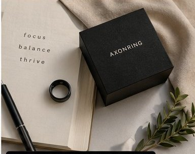

Fewer steps
Turn a physical gesture into a digital action instead of repeatedly reaching for another device.
AxonRing is a premium intelligent ring designed to remove friction from everyday life. Your finger becomes an interface for digital actions — with less reaching, fewer interruptions, and technology that can fade into the background.
Most technology asks you to reach for it. AxonRing is built around the opposite idea: technology should work around the human, reduce complexity, and return time.
Turn a physical gesture into a digital action instead of repeatedly reaching for another device.
Your most useful interface can live on something you already wear — not another screen in your pocket.
Quiet, intentional technology should help you stay present instead of constantly asking for attention.
The opportunity is not to add more technology. It is to remove unnecessary steps.
Your hands are full. Your phone is somewhere in your pocket. A simple action becomes a sequence of tiny interruptions.
Put the interface where your hand already is. One intentional tap can connect the physical moment to a digital action.
Today, AxonRing is a passive NFC product. These are the capabilities we can stand behind now.
Share a contact card, website, portfolio, social profile, or other URL with a compatible NFC-enabled phone.
Use supported iPhone Shortcuts or Android routines to turn a tap into a phone action or personal workflow.
The passive NFC tag requires no battery, charging routine, or subscription for the ring itself.
These are the editorial territories that should shape our product, brand, and organic content.
AxonRing is the beginning of a broader idea: a physical interface between people and the digital world that can eventually connect identity, payments, secure access, authentication, intelligent automation, and other services.

“Technology should serve the human — not interrupt the human.”
That is the standard behind AxonRing. We will distinguish what exists today from what we are building next, because credibility compounds.
IT NOTICES. YOU DON'T HAVE TO.
Join the AxonRing Founding Members list for early product access, development updates, and a direct voice in what we build next.
Become a Founding MemberThe current AxonRing product is a passive NFC ring. It can open payment links or other digital destinations, but it should not be represented as a certified card-payment ring unless and until that capability is implemented and certified.
The passive NFC functionality does not require a battery in the ring. The phone or reader supplies the energy needed to read the NFC tag.
Our strategic focus is not primarily biometric measurement. AxonRing is being developed around frictionless interaction — making the ring a physical interface between the wearer and digital actions.
We are exploring payments, identity, secure access, authentication, deeper automation, and intelligent interactions. Future capabilities will be labeled as development or vision until they are actually available.